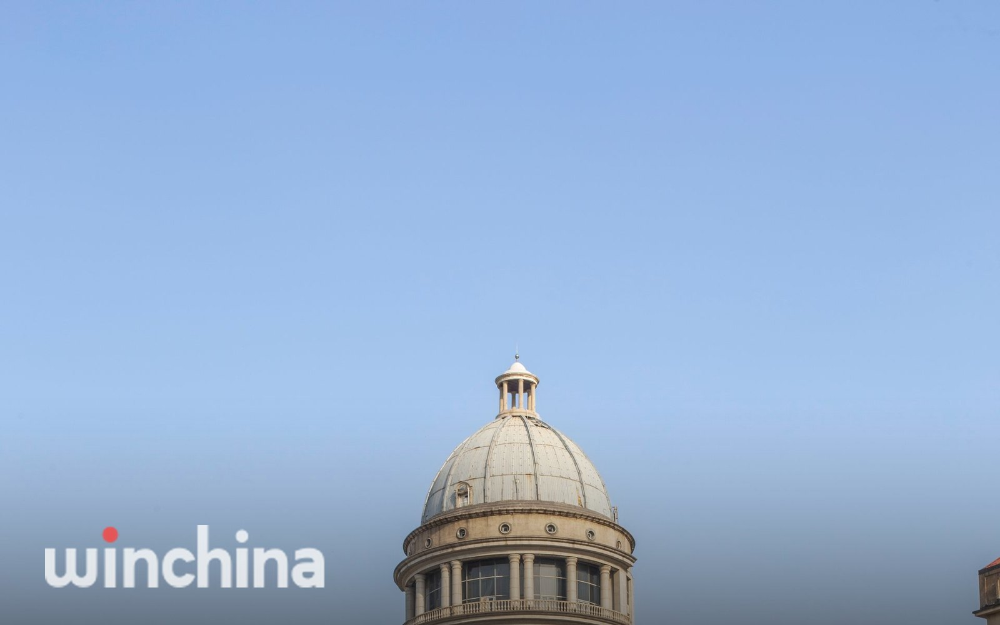

OWN PROJECT한국서비스
윈차이나 중국비자발급센터
17 / 67중국 비자 발급과 아포스티유 인증, 번역공증을 대행하는 중국비자발급센터를 운영합니다. 누적 비자 12만 건, 인증 대행 2만 4천 건, 번역 1만 4천 건을 처리했습니다.

클라이언트자체 브랜드
국가한국 · 서울
기간2018년 ~ 운영 중
유형서비스
수행 거점서울 본사
규모누적 비자 120,560건 · 인증 24,575건 · 번역 14,784건
Overview프로젝트 개요
윈차이나는 서울 광화문에 사무소를 둔 중국비자발급센터입니다. 관광, 상용, 유학, 취업, 가족동반, 친인척 방문, 취재까지 목적별 중국 비자를 대행하고, 중국 제출용 서류의 번역공증과 아포스티유 인증을 함께 처리합니다.
중국 서류는 순서가 어긋나면 처음부터 다시 해야 합니다. 서류 발급, 중문 번역, 번역공증, 아포스티유까지 한 흐름으로 진행해 보완 요청과 일정 지연을 줄입니다. 2023년 11월 중국이 아포스티유 협약으로 전환된 이후 달라진 절차도 반영해 안내합니다. 누적 비자 12만 건, 인증 대행 2만 4천 건을 처리했고 기업회원 비자 신청도 운영합니다.
What We Did수행 업무
목적별 중국 비자 대행
관광부터 취업(Z), 유학(X1·X2), 가족동반까지 접수와 발급을 대행합니다.
아포스티유 · 공증 대행
중국 제출 서류의 번역공증과 아포스티유를 처리합니다.
전문 번역
한국어·중국어·일본어·영어 번역과 공증 연결.
기업회원 비자신청
반복 출장 기업을 위한 기업 단위 신청 창구를 운영합니다.
Process진행 단계
상담 · 서류 안내
번역 · 공증
아포스티유
비자 접수 · 발급
On the Ground현장 연결
이 프로젝트를 실행한 거점과 연계 브랜드입니다.
FAQ자주 묻는 질문
윈차이나 중국비자발급센터는 어디에서 진행됐나요?
한국 서울에서 진행했습니다.
언제 진행됐나요?
2018년 ~ 운영 중
어떤 업무를 수행했나요?
목적별 중국 비자 대행, 아포스티유 · 공증 대행, 전문 번역, 기업회원 비자신청.
규모는 어느 정도였나요?
누적 비자 120,560건 · 인증 24,575건 · 번역 14,784건
누가 실행했나요?
퍼스트마케팅컴퍼니 서울 본사가 직접 실행했습니다. 자체 브랜드 프로젝트입니다.